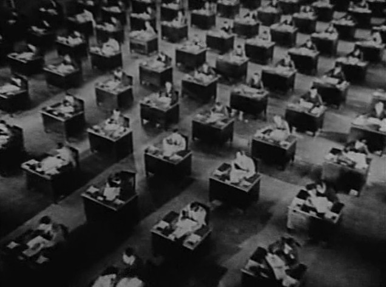

The Crowd, frame at 7:24
King Vidor · 1928 · Silent film, black and white (frame)
Free to use
King Vidor made the film after the success of The Big Parade and sold the unusual scenario to Irving Thalberg as an experimental film. He avoided big-name stars: James Murray had started as a studio extra and had reached California riding boxcars, and the female lead went to Eleanor Boardman, Vidor's second wife. Some of the New York scenes were shot with hidden cameras.